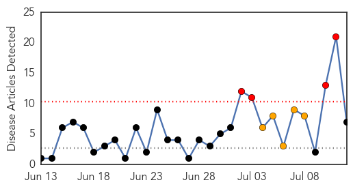

30 Day Trends
Web: 4 alerts, 5 warnings
Twitter: 4 alerts, 0 warnings
Top Articles:
- 0.980
- Cause for concern: Number of dengue cases in Swat reaches 17
- 0.971
- First Dengue Vaccine Coming Next Year
- 0.920
- Vaccine to Be Ready by 2015, Reduces Fever Cases by 88.5 Percent
- 0.907
- Third phase trial of dengue vaccine gives promising result
- 0.905
- Third phase trial of dengue vaccine gives promising result
- 0.903
- Third phase trial of dengue vaccine gives promising result
- 0.793
- Government to carry out feasibility study on dengue vaccine, says Subra - Nation
Top Tweets:
-
No tweets found for Jul 12, 2014
Web/News Articles
Tweets

Article Locations